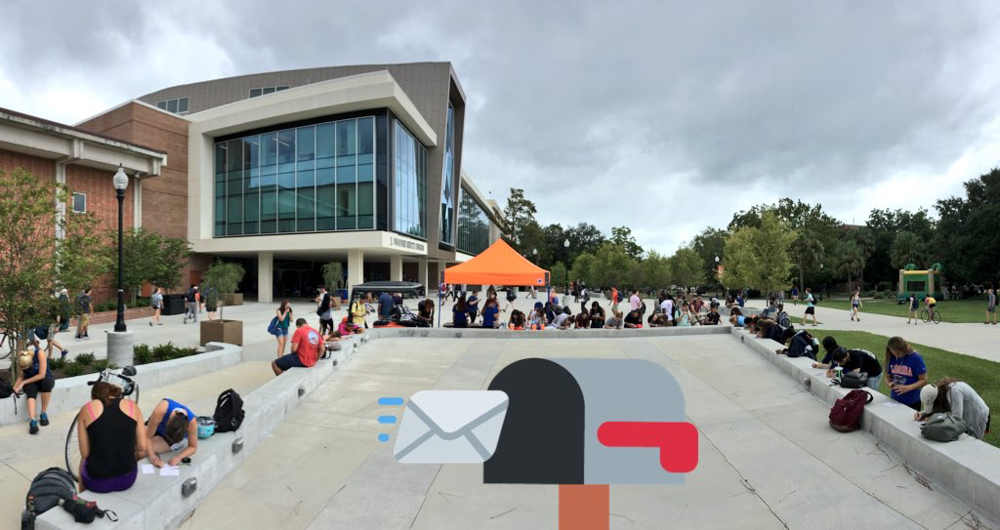
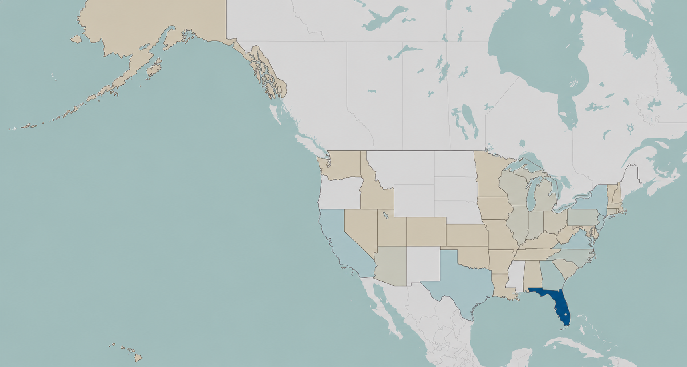
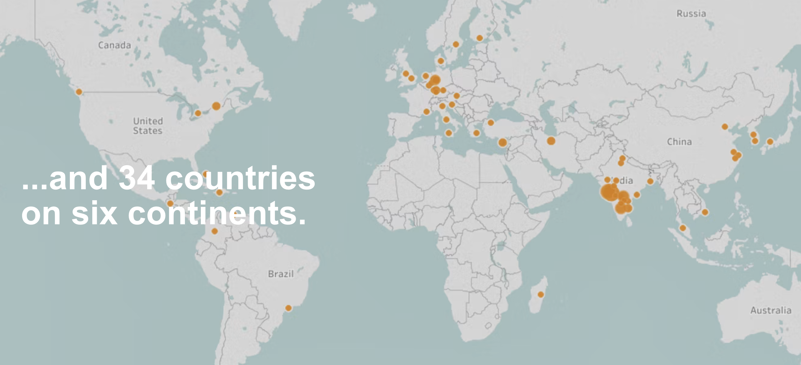

Greetings from Gainesville
A postcard activation that turned UF students into ambassadors — reaching 41 states and 34 countries through a single, shareable physical object.
Give students something worth sharing — something physical, personal, and beautiful enough to send home — and let the community do the rest.
The idea was simple: design a set of Greetings from Gainesville postcards and hand them out to students on campus. No campaign. No ask. Just give them something beautiful and trust that people who love their school will share it.
They did. Students photographed the postcards and posted them. They mailed them home. They brought them back to their hometowns. What started as a campus giveaway became a genuine piece of shareable content — the kind you can't manufacture.



The reach
The campaign spread organically — no paid media, no influencers, no formal ask. Just students who loved where they were and wanted to share it.



The campaign became a model for future community-driven activations and was widely shared across social channels.